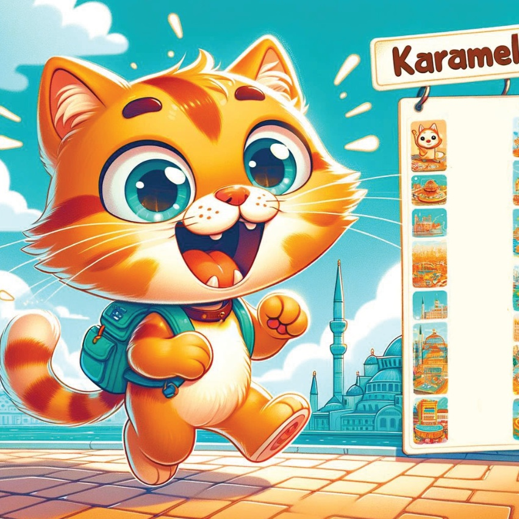
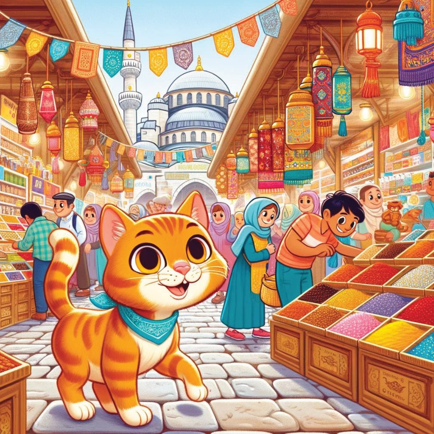
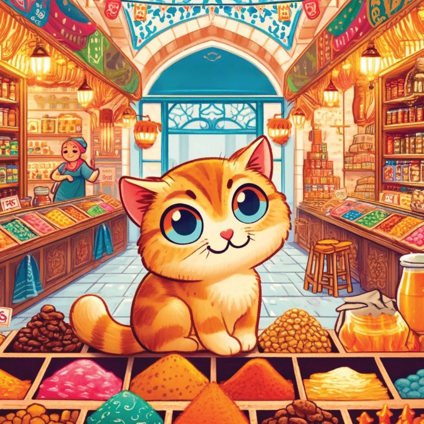
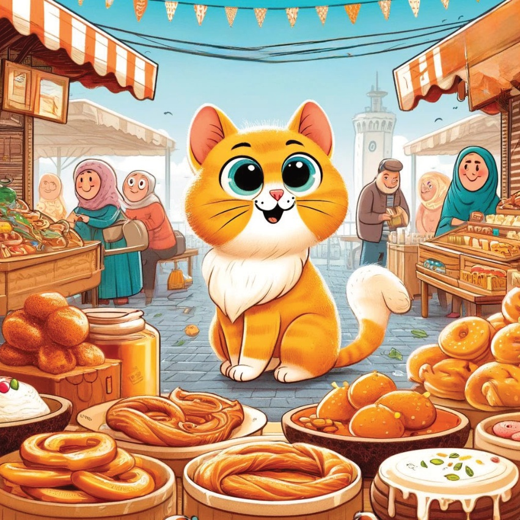
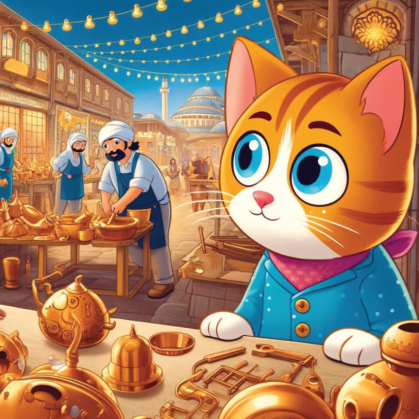
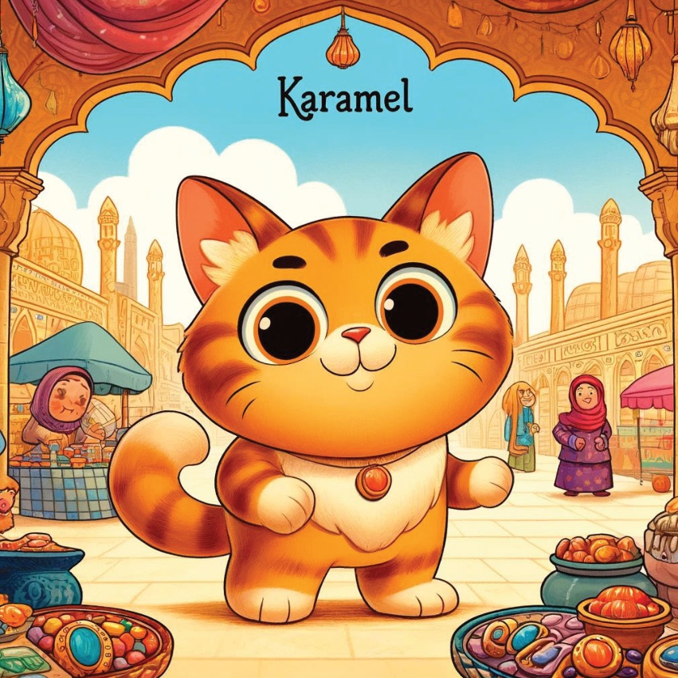

Karamel, the adventurous little cat,
was always fascinated by the hustle and bustle of markets.
One day, she decided to explore the famous markets and bazaars of Türkiye.
With a list of places to visit and excitement in her heart, she set off on a new adventure.
4

5
Grand Bazaar in Istanbul
Karamel's first stop was the Grand Bazaar in Istanbul, one of the oldest and largest covered markets in the world. She wandered through the maze of colorful stalls, marveling at the variety of goods, from spices to jewelry.
6

7
Spice Bazaar, Istanbul
Next, Karamel visited the Spice Bazaar, also in Istanbul.
The air was filled with the rich aroma of spices, herbs, and teas. She sampled delicious Turkish delights and bought some spices to take home.
8

9
Here's the translation of the story:
Kemeralti Market in Izmir
In Izmir, Karamel explored
the Kemeralti Market, a historic market
known for its vibrant atmosphere.
She enjoyed the lively ambiance,
meeting friendly vendors
and discovering unique handicrafts.
10
11
12

13
Antalya Bazaar
In Antalya, Karamel visited
the local bazaar, where she found
beautiful handmade carpets
and traditional Turkish pottery.
She was fascinated by the intricate
designs and craftsmanship.
14
15
The Copper Bazaar in Gaziantep.
Karamel’s next stop was…
16

17
Market in Mardin
Karamel’s final stop was the market, in Mardin, where she explored the rich cultural heritage of the region. She admired the intricate jewelry, tasted local delicacies, and enjoyed the warm hospitality of the vendors.
18

19
With her heart full of joy, and her bags filled with treasures, Karamel returned home. She realized that Turkish markets were not just about shopping, but about experiencing the rich culture and warm hospitality of Turkey.